Changes in PRIMAP-hist v2.5.1_final compared to v2.5_final for North Macedonia
2024-02-29
Johannes Gütschow
Change analysis for North Macedonia for PRIMAP-hist v2.5.1_final compared to v2.5_final
Overview over emissions by sector and gas
The following figures show the aggregate national total emissions excluding LULUCF AR6GWP100 for the country reported priority scenario. The dotted linesshow the v2.5_final data.
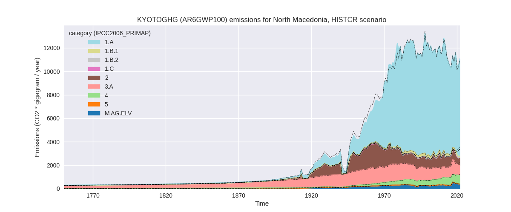
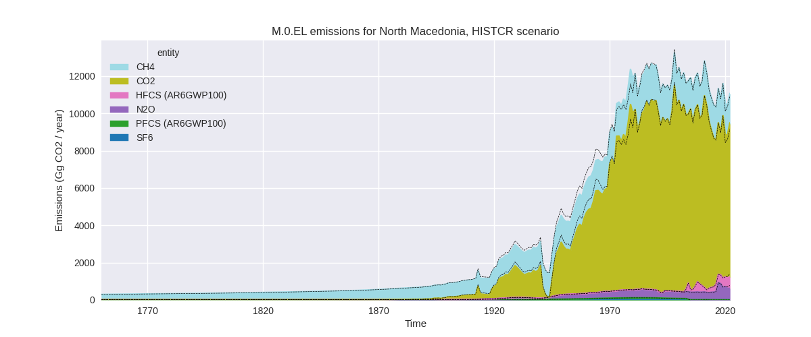
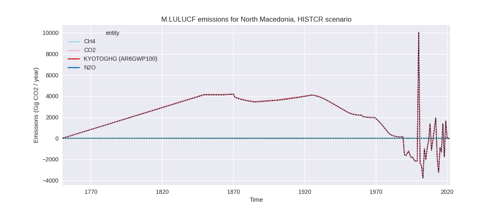
The following figures show the aggregate national total emissions excluding LULUCF AR6GWP100 for the third party priority scenario. The dotted linesshow the v2.5_final data.
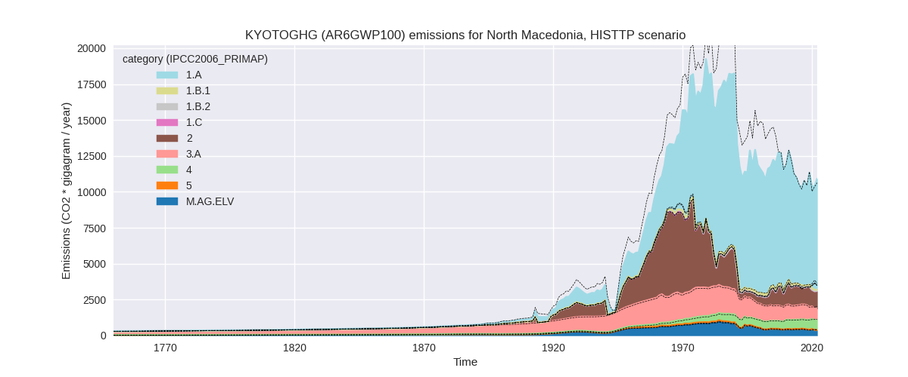
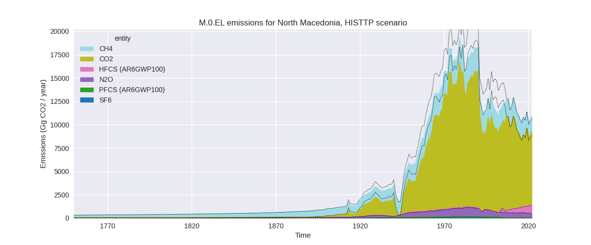
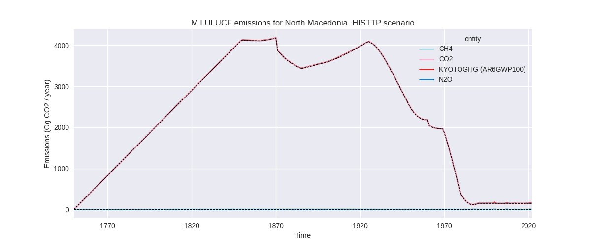
Overview over changes
In the country reported priority scenario we have the following changes for aggregate Kyoto GHG and national total emissions excluding LULUCF (M.0.EL):
- Emissions in 2022 have changed by 1.2%% (129.28 Gg CO2 / year)
- Emissions in 1990-2022 have changed by 0.1%% (8.90 Gg CO2 / year)
In the third party priority scenario we have the following changes for aggregate Kyoto GHG and national total emissions excluding LULUCF (M.0.EL):
- Emissions in 2022 have changed by 2.7%% (285.81 Gg CO2 / year)
- Emissions in 1990-2022 have changed by -9.8%% (-1279.44 Gg CO2 / year)
Most important changes per scenario and time frame
In the country reported priority scenario the following sector-gas combinations have the highest absolute impact on national total KyotoGHG (AR6GWP100) emissions in 2022 (top 5):
- 1: 1.A, CO2 with 850.78 Gg CO2 / year (11.7%)
- 2: 2, CO2 with -367.87 Gg CO2 / year (-78.3%)
- 3: 3.A, CH4 with -131.52 Gg CO2 / year (-15.9%)
- 4: M.AG.ELV, N2O with -92.45 Gg CO2 / year (-19.8%)
- 5: 3.A, N2O with -70.84 Gg CO2 / year (-33.2%)
In the country reported priority scenario the following sector-gas combinations have the highest absolute impact on national total KyotoGHG (AR6GWP100) emissions in 1990-2022 (top 5):
- 1: 1.A, CO2 with 68.36 Gg CO2 / year (0.8%)
- 2: 2, CO2 with -37.46 Gg CO2 / year (-5.5%)
- 3: M.AG.ELV, N2O with -9.34 Gg CO2 / year (-3.2%)
- 4: 3.A, CH4 with -5.91 Gg CO2 / year (-0.6%)
- 5: 1.B.1, CH4 with -4.46 Gg CO2 / year (-2.1%)
In the third party priority scenario the following sector-gas combinations have the highest absolute impact on national total KyotoGHG (AR6GWP100) emissions in 2022 (top 5):
- 1: 1.A, CO2 with 721.45 Gg CO2 / year (10.5%)
- 2: 2, CO2 with -210.88 Gg CO2 / year (-36.5%)
- 3: 3.A, CH4 with -130.27 Gg CO2 / year (-15.3%)
- 4: M.AG.ELV, N2O with -57.52 Gg CO2 / year (-16.5%)
- 5: 1.B.2, CH4 with -38.93 Gg CO2 / year (-78.8%)
In the third party priority scenario the following sector-gas combinations have the highest absolute impact on national total KyotoGHG (AR6GWP100) emissions in 1990-2022 (top 5):
- 1: 1.A, CO2 with -1214.28 Gg CO2 / year (-12.9%)
- 2: 2, CO2 with -45.11 Gg CO2 / year (-6.3%)
- 3: 1.B.2, CH4 with -30.25 Gg CO2 / year (-71.7%)
- 4: M.AG.ELV, CO2 with 13.39 Gg CO2 / year (104.3%)
- 5: 3.A, CH4 with -5.95 Gg CO2 / year (-0.6%)
Notes on data changes
Here we list notes explaining important emissions changes for the country. ’' means that the following text only applies to the TP time series, while means that it only applies to the CR scenario. Otherwise the note applies to both scenarios.
- 1.A, CO2: CDIAC 2023 has much lower emissions for the period 1992-2006 leading to lower pre-1992 emissions as the share in emissions of former Yugoslavia attributed to North Macedonia depends on the 1992 emissions.
Changes by sector and gas
For each scenario and time frame the changes are displayed for all individual sectors and all individual gases. In the sector plot we use aggregate Kyoto GHGs in AR6GWP100. In the gas plot we usenational total emissions without LULUCF. ## country reported scenario
2022
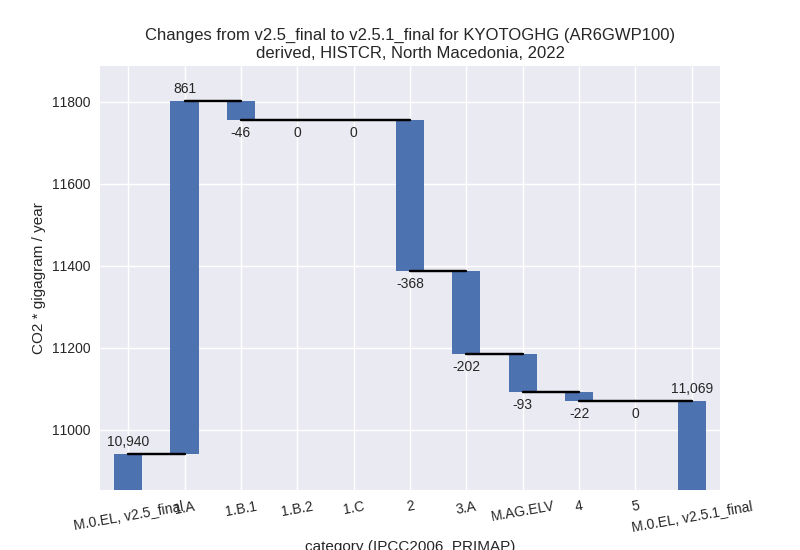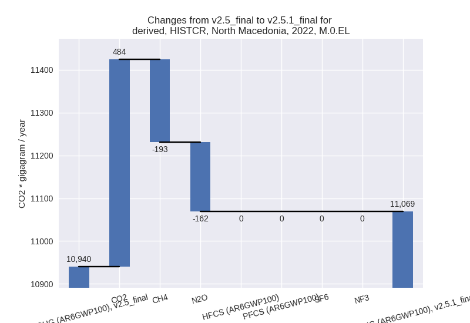
1990-2022
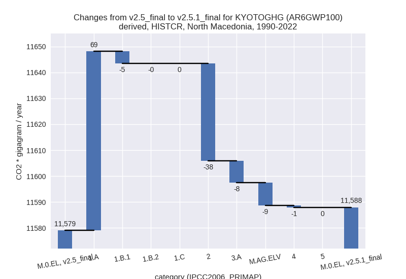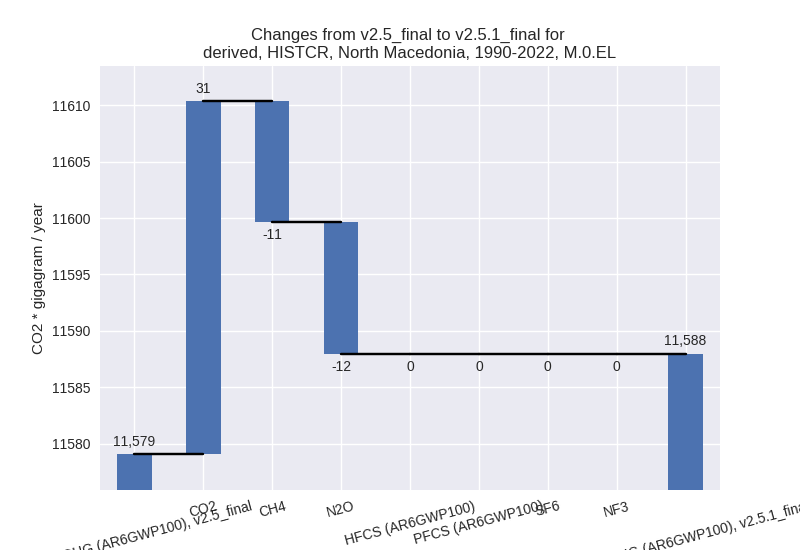
third party scenario
2022
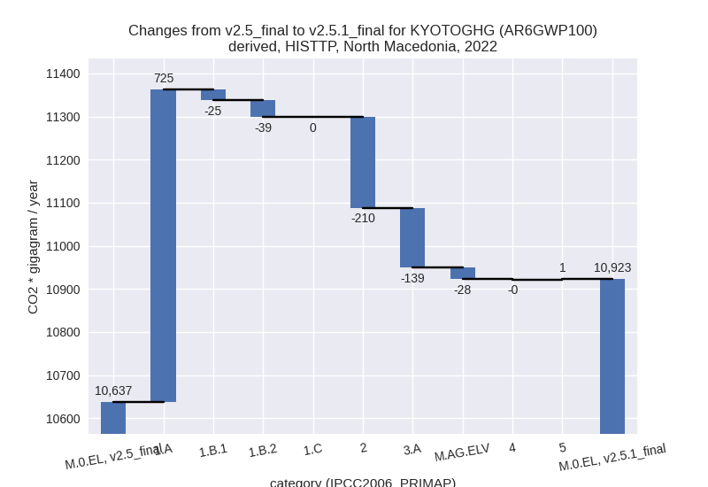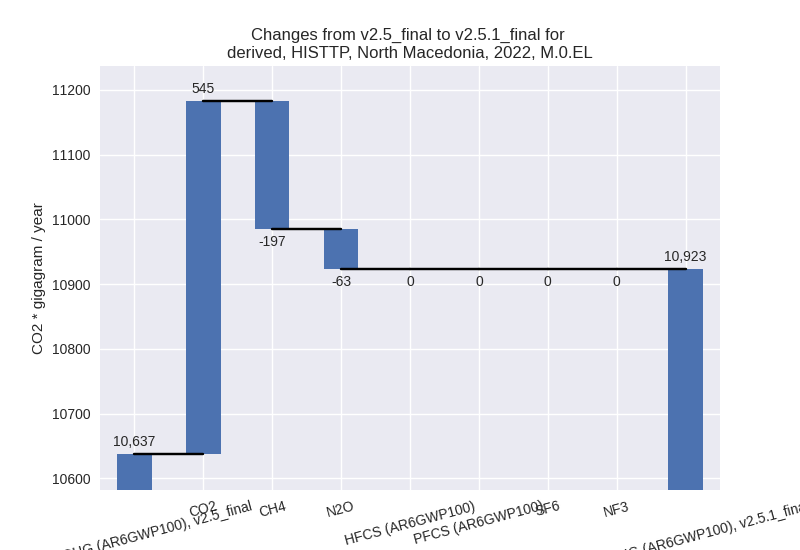
1990-2022
 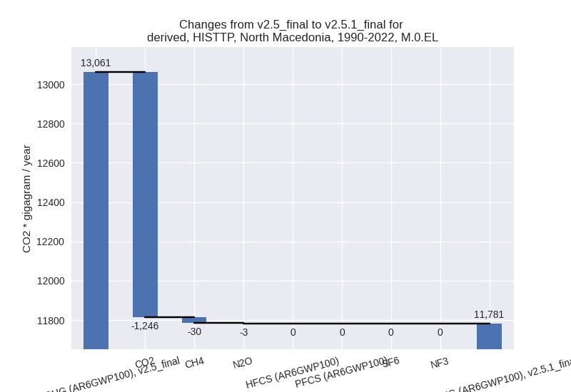
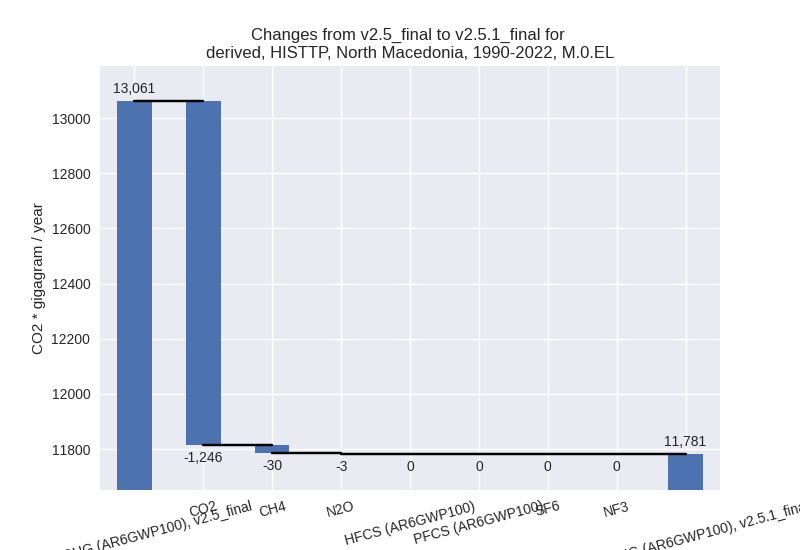
Detailed changes for the scenarios:
country reported scenario (HISTCR):
Most important changes per time frame
For 2022 the following sector-gas combinations have the highest absolute impact on national total KyotoGHG (AR6GWP100) emissions in 2022 (top 5):
- 1: 1.A, CO2 with 850.78 Gg CO2 / year (11.7%)
- 2: 2, CO2 with -367.87 Gg CO2 / year (-78.3%)
- 3: 3.A, CH4 with -131.52 Gg CO2 / year (-15.9%)
- 4: M.AG.ELV, N2O with -92.45 Gg CO2 / year (-19.8%)
- 5: 3.A, N2O with -70.84 Gg CO2 / year (-33.2%)
For 1990-2022 the following sector-gas combinations have the highest absolute impact on national total KyotoGHG (AR6GWP100) emissions in 1990-2022 (top 5):
- 1: 1.A, CO2 with 68.36 Gg CO2 / year (0.8%)
- 2: 2, CO2 with -37.46 Gg CO2 / year (-5.5%)
- 3: M.AG.ELV, N2O with -9.34 Gg CO2 / year (-3.2%)
- 4: 3.A, CH4 with -5.91 Gg CO2 / year (-0.6%)
- 5: 1.B.1, CH4 with -4.46 Gg CO2 / year (-2.1%)
Changes in the main sectors for aggregate KyotoGHG (AR6GWP100) are
- 1: Total sectoral emissions in 2022 are 8390.97 Gg
CO2 / year which is 75.8% of M.0.EL emissions. 2022 Emissions have
changed by 10.7% (814.31 Gg CO2 /
year). 1990-2022 Emissions have changed by 0.7% (64.45 Gg CO2 / year). For 2022 the
changes per gas
are:
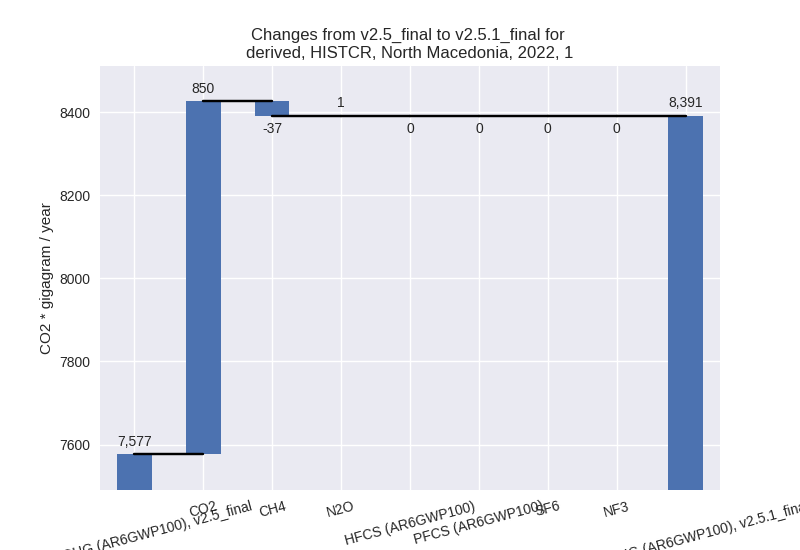
The changes come from the following subsectors:- 1.A: Total sectoral emissions in 2022 are 8288.67
Gg CO2 / year which is 98.8% of category 1 emissions. 2022 Emissions
have changed by 11.6% (860.75 Gg CO2
/ year). 1990-2022 Emissions have changed by 0.8% (69.03 Gg CO2 / year). For 2022 the
changes per gas
are:
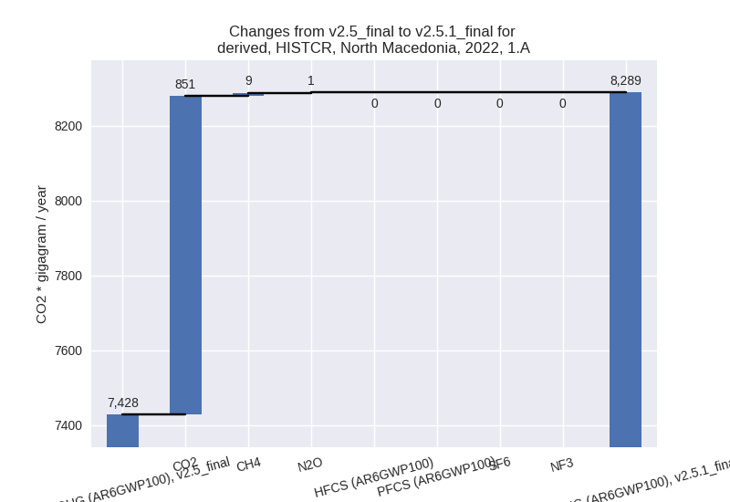
There is no subsector information available in PRIMAP-hist. - 1.B.1: Total sectoral emissions in 2022 are 102.31
Gg CO2 / year which is 1.2% of category 1 emissions. 2022 Emissions have
changed by -31.2% (-46.44 Gg CO2 /
year). 1990-2022 Emissions have changed by -2.1% (-4.58 Gg CO2 / year). For 2022 the
changes per gas
are:
For 1990-2022 the changes per gas are:
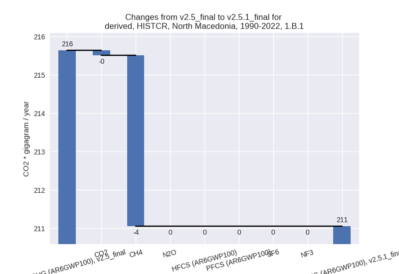
There is no subsector information available in PRIMAP-hist. - 1.B.2: Total sectoral emissions in 2022 are 0.00 Gg CO2 / year which is 0.0% of category 1 emissions. 2022 Emissions have changed by 0.0% (0.00 Gg CO2 / year). 1990-2022 Emissions have changed by -0.1% (-0.00 Gg CO2 / year).
- 1.A: Total sectoral emissions in 2022 are 8288.67
Gg CO2 / year which is 98.8% of category 1 emissions. 2022 Emissions
have changed by 11.6% (860.75 Gg CO2
/ year). 1990-2022 Emissions have changed by 0.8% (69.03 Gg CO2 / year). For 2022 the
changes per gas
are:
- 2: Total sectoral emissions in 2022 are 722.89 Gg
CO2 / year which is 6.5% of M.0.EL emissions. 2022 Emissions have
changed by -33.7% (-367.91 Gg CO2 /
year). 1990-2022 Emissions have changed by -4.0% (-37.55 Gg CO2 / year). For 2022 the
changes per gas
are:
For 1990-2022 the changes per gas are:
- M.AG: Total sectoral emissions in 2022 are 1231.15
Gg CO2 / year which is 11.1% of M.0.EL emissions. 2022 Emissions have
changed by -19.3% (-295.37 Gg CO2 /
year). 1990-2022 Emissions have changed by -1.3% (-17.33 Gg CO2 / year). For 2022 the
changes per gas
are:

The changes come from the following subsectors:- 3.A: Total sectoral emissions in 2022 are 836.62 Gg
CO2 / year which is 68.0% of category M.AG emissions. 2022 Emissions
have changed by -19.5% (-202.36 Gg
CO2 / year). 1990-2022 Emissions have changed by -0.8% (-8.43 Gg CO2 / year). For 2022 the
changes per gas
are:
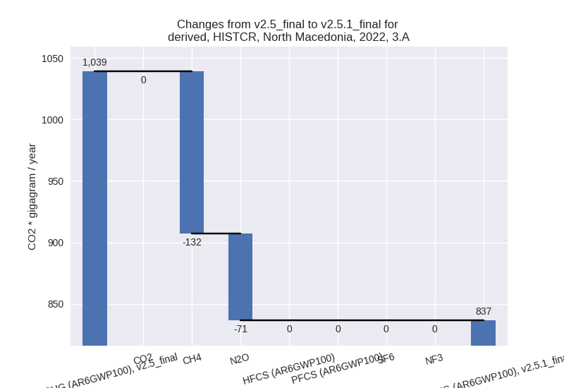
There is no subsector information available in PRIMAP-hist. - M.AG.ELV: Total sectoral emissions in 2022 are
394.52 Gg CO2 / year which is 32.0% of category M.AG emissions. 2022
Emissions have changed by -19.1%
(-93.01 Gg CO2 / year). 1990-2022 Emissions have changed by -2.8% (-8.90 Gg CO2 / year). For 2022 the
changes per gas
are:
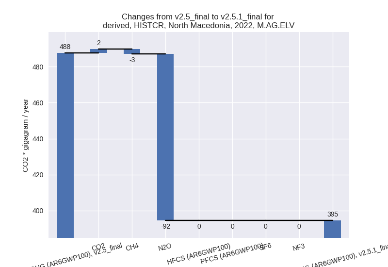
For 1990-2022 the changes per gas are:
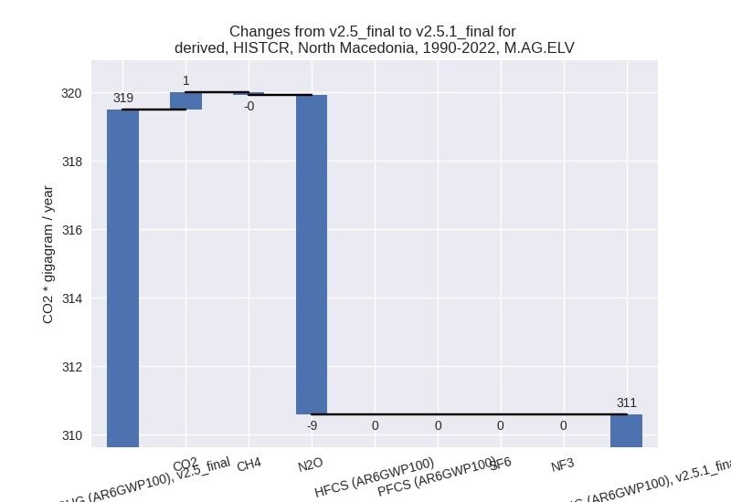
There is no subsector information available in PRIMAP-hist.
- 3.A: Total sectoral emissions in 2022 are 836.62 Gg
CO2 / year which is 68.0% of category M.AG emissions. 2022 Emissions
have changed by -19.5% (-202.36 Gg
CO2 / year). 1990-2022 Emissions have changed by -0.8% (-8.43 Gg CO2 / year). For 2022 the
changes per gas
are:
- 4: Total sectoral emissions in 2022 are 724.29 Gg
CO2 / year which is 6.5% of M.0.EL emissions. 2022 Emissions have
changed by -2.9% (-21.75 Gg CO2 /
year). 1990-2022 Emissions have changed by -0.1% (-0.66 Gg CO2 / year). For 2022 the
changes per gas
are:

- 5: No data
third party scenario (HISTTP):
Most important changes per time frame
For 2022 the following sector-gas combinations have the highest absolute impact on national total KyotoGHG (AR6GWP100) emissions in 2022 (top 5):
- 1: 1.A, CO2 with 721.45 Gg CO2 / year (10.5%)
- 2: 2, CO2 with -210.88 Gg CO2 / year (-36.5%)
- 3: 3.A, CH4 with -130.27 Gg CO2 / year (-15.3%)
- 4: M.AG.ELV, N2O with -57.52 Gg CO2 / year (-16.5%)
- 5: 1.B.2, CH4 with -38.93 Gg CO2 / year (-78.8%)
For 1990-2022 the following sector-gas combinations have the highest absolute impact on national total KyotoGHG (AR6GWP100) emissions in 1990-2022 (top 5):
- 1: 1.A, CO2 with -1214.28 Gg CO2 / year (-12.9%)
- 2: 2, CO2 with -45.11 Gg CO2 / year (-6.3%)
- 3: 1.B.2, CH4 with -30.25 Gg CO2 / year (-71.7%)
- 4: M.AG.ELV, CO2 with 13.39 Gg CO2 / year (104.3%)
- 5: 3.A, CH4 with -5.95 Gg CO2 / year (-0.6%)
Changes in the main sectors for aggregate KyotoGHG (AR6GWP100) are
- 1: Total sectoral emissions in 2022 are 7820.40 Gg
CO2 / year which is 71.6% of M.0.EL emissions. 2022 Emissions have
changed by 9.2% (661.25 Gg CO2 /
year). 1990-2022 Emissions have changed by -12.7% (-1237.84 Gg CO2 / year). For 2022
the changes per gas
are:
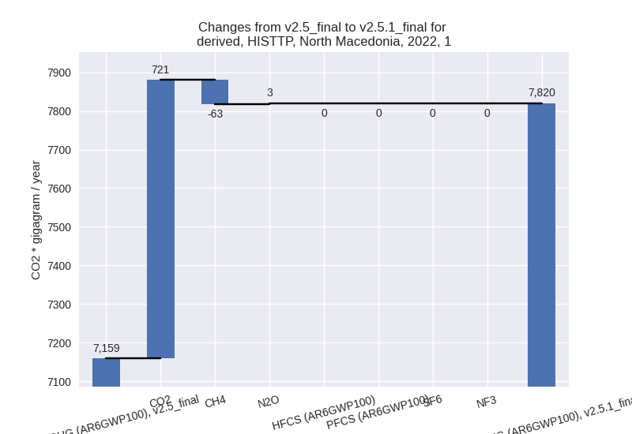
For 1990-2022 the changes per gas are:
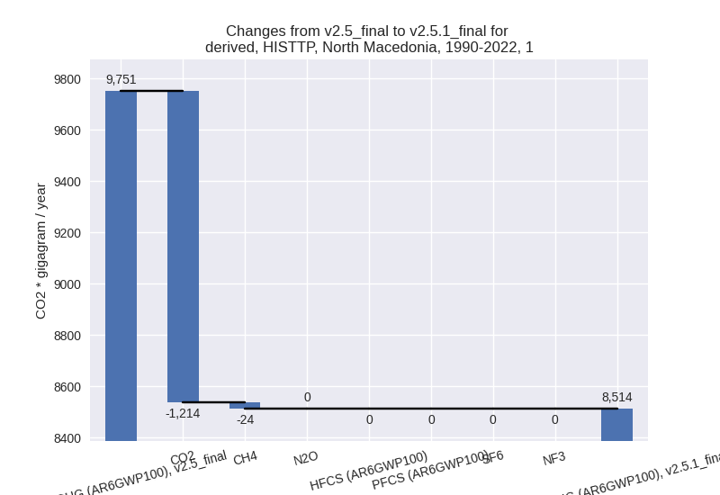
The changes come from the following subsectors:- 1.A: Total sectoral emissions in 2022 are 7726.81
Gg CO2 / year which is 98.8% of category 1 emissions. 2022 Emissions
have changed by 10.4% (725.17 Gg CO2
/ year). 1990-2022 Emissions have changed by -12.7% (-1211.89 Gg CO2 / year). For 2022
the changes per gas
are:
For 1990-2022 the changes per gas are:
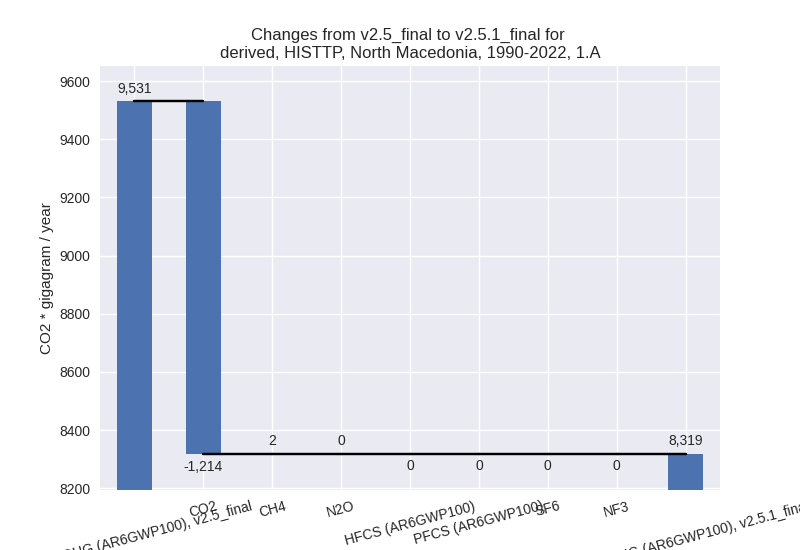
There is no subsector information available in PRIMAP-hist. - 1.B.1: Total sectoral emissions in 2022 are 83.09
Gg CO2 / year which is 1.1% of category 1 emissions. 2022 Emissions have
changed by -23.1% (-24.99 Gg CO2 /
year). 1990-2022 Emissions have changed by 2.4% (4.29 Gg CO2 / year). For 2022 the
changes per gas
are:

For 1990-2022 the changes per gas are:
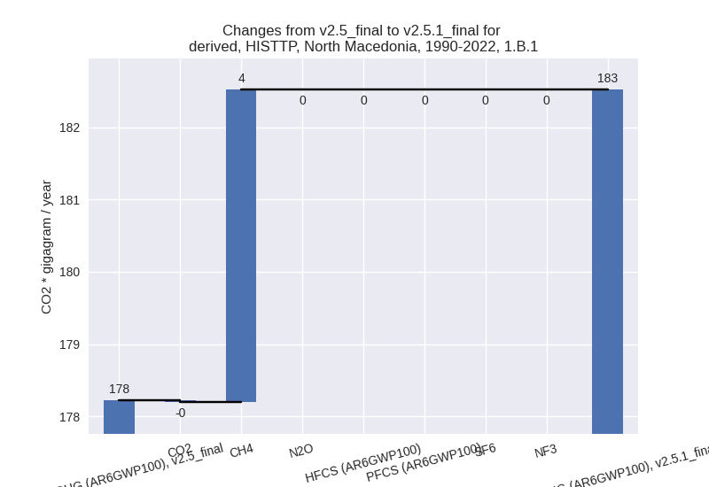
There is no subsector information available in PRIMAP-hist. - 1.B.2: Total sectoral emissions in 2022 are 10.50
Gg CO2 / year which is 0.1% of category 1 emissions. 2022 Emissions have
changed by -78.8% (-38.93 Gg CO2 /
year). 1990-2022 Emissions have changed by -71.7% (-30.25 Gg CO2 / year). For 2022
the changes per gas
are:
For 1990-2022 the changes per gas are:
There is no subsector information available in PRIMAP-hist.
- 1.A: Total sectoral emissions in 2022 are 7726.81
Gg CO2 / year which is 98.8% of category 1 emissions. 2022 Emissions
have changed by 10.4% (725.17 Gg CO2
/ year). 1990-2022 Emissions have changed by -12.7% (-1211.89 Gg CO2 / year). For 2022
the changes per gas
are:
- 2: Total sectoral emissions in 2022 are 1229.97 Gg
CO2 / year which is 11.3% of M.0.EL emissions. 2022 Emissions have
changed by -14.6% (-209.88 Gg CO2 /
year). 1990-2022 Emissions have changed by -4.2% (-45.06 Gg CO2 / year). For 2022 the
changes per gas
are:
For 1990-2022 the changes per gas are: - M.AG: Total sectoral emissions in 2022 are 1131.40
Gg CO2 / year which is 10.4% of M.0.EL emissions. 2022 Emissions have
changed by -12.8% (-166.24 Gg CO2 /
year). 1990-2022 Emissions have changed by 0.2% (3.44 Gg CO2 / year). For 2022 the
changes per gas
are:
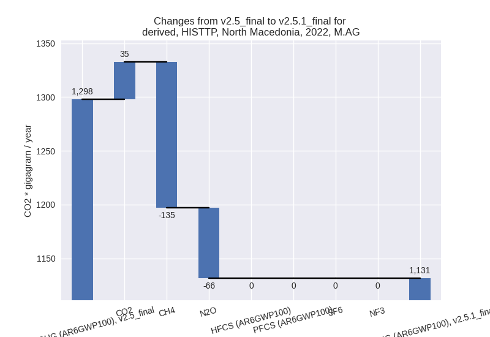
The changes come from the following subsectors:- 3.A: Total sectoral emissions in 2022 are 769.00 Gg
CO2 / year which is 68.0% of category M.AG emissions. 2022 Emissions
have changed by -15.3% (-138.57 Gg
CO2 / year). 1990-2022 Emissions have changed by -0.6% (-6.32 Gg CO2 / year). For 2022 the
changes per gas
are:
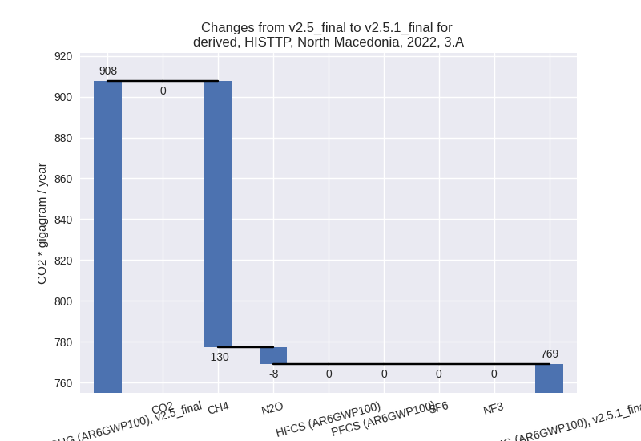
There is no subsector information available in PRIMAP-hist. - M.AG.ELV: Total sectoral emissions in 2022 are
362.40 Gg CO2 / year which is 32.0% of category M.AG emissions. 2022
Emissions have changed by -7.1%
(-27.67 Gg CO2 / year). 1990-2022 Emissions have changed by 2.1% (9.76 Gg CO2 / year). For 2022 the
changes per gas
are:
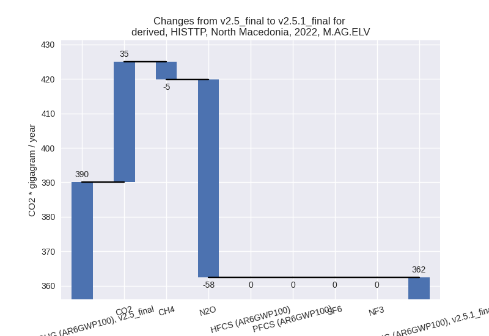
For 1990-2022 the changes per gas are:
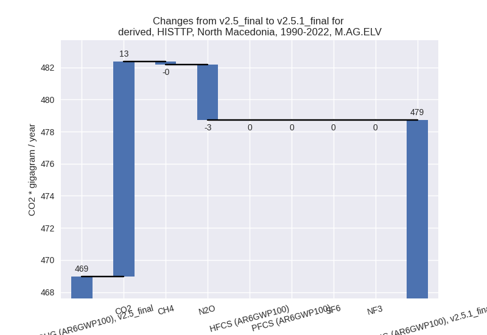
There is no subsector information available in PRIMAP-hist.
- 3.A: Total sectoral emissions in 2022 are 769.00 Gg
CO2 / year which is 68.0% of category M.AG emissions. 2022 Emissions
have changed by -15.3% (-138.57 Gg
CO2 / year). 1990-2022 Emissions have changed by -0.6% (-6.32 Gg CO2 / year). For 2022 the
changes per gas
are:
- 4: Total sectoral emissions in 2022 are 711.11 Gg CO2 / year which is 6.5% of M.0.EL emissions. 2022 Emissions have changed by -0.0% (-0.22 Gg CO2 / year). 1990-2022 Emissions have changed by -0.0% (-0.01 Gg CO2 / year).
- 5: Total sectoral emissions in 2022 are 30.10 Gg
CO2 / year which is 0.3% of M.0.EL emissions. 2022 Emissions have
changed by 3.1% (0.90 Gg CO2 /
year). 1990-2022 Emissions have changed by 0.1% (0.03 Gg CO2 / year). For 2022 the
changes per gas
are:
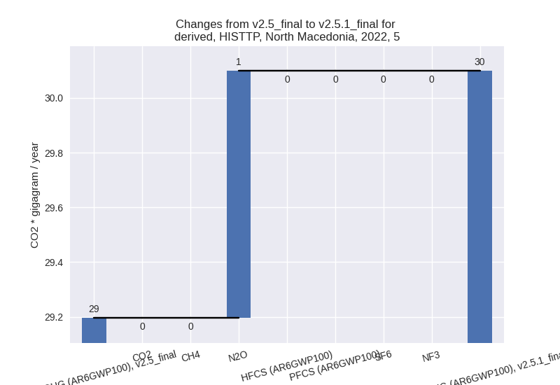